OpenStreetMapのWeb Site活用法
一般社団法人オープンストリートマップ・ファウンデーション・ジャパン
代表理事 三浦 広志
アジェンダ
Getting Started
前提環境
WordPressでOSM
DrupalでOSM
Getting Started
本セッションでは
本セッションでは、ハンズオンスタイルで、ブロク上に地図を統合する方法を学びます。 Amazon Web Service上に実現することを前提にします。
また、本プレゼンは、
http://miurahr.github.com/osc_tokyo_2013spring/
でアクセス可能です。
OpenStreetMap
「OpenStreetMapは道路地図などの地理情報データを誰でも利用できるよう、フリーの地理情報データを作成することを目的としたプロジェクト」(wiki.osm.orgより)
なぜOSMか？
「自由に使えると思っている地図の多くが実は法的・技術的に問題があり、人々がクリエイティブに、生産的に、あるいは今まで予期しなかった方法でそれを利用する事を妨げている」(wiki.osm.orgより)
- 地図データには著作権がある
- ベクターデータを自由には使えない
そもそもOSMとは？
- Wiki的に誰もが自由に書き換えることのできる地図データ
- 「みんなが持っているGPSログデータを重ね合わせると地図になるんじゃね？」という発想
- それぞれが持っているロケーション知識も使えるよね
地図作成の原動力
- なぜ、地図を作るのか？
既存オンライン地図で足りないものがある
- 自由に使える地図がほしい！
著作権
- 最新の道路情報がほしい！
- 道路状態は日々変化している
- 工事中だったり
- 先の震災では道路状態は大きく変わった！
- ベクターデータがほしい！
- いろいろ計測できる？
- カーナビが作れる？
OSMの仕組み
- 地図作成ユーザがデータを持ち寄ってOSMサーバに登録
- 地図エディタを利用
- オンライン／オフラインエディタ
- OSMサーバは
- データを元にレンダリングして画像地図を提供
- Webから
- スマートフォンから
- ベクターデータも取り出せる
- Web地図から部分的に取得
- エディタから部分的に取得
- 地図のベクタデータをまるごとダウンロード
では、使ってみましょう。
前提環境
本説明では、Amazon Webサービスにサーバ運営をするという条件で、記載されているが、AWSをおすすめするものではない。 また、サーバイメージには、オールインワンのサーバイメージを提供するBITNAMI http://bitnami.org/ を想定してます。 すべて自分でインストール等を行うこともできますし、オンプレミスの環境を構築することもできますが、サーバ環境の準備については範疇外とします。
WordPressでマップ
アプリ・イメージ検索・インスタンス起動
AWSのインスタンス起動で、次のイメージを選択し、起動します。
AMI ID: ami-ad0580ac
AMI Name: bitnami-wordpress-3.5.1-0-linux-ubuntu-12.04.1-x86_64-ebs
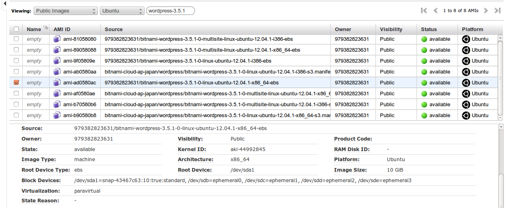
補足
これと同等のWindows用、MacOSX用、Linux用のイメージも入手可能ですので、詳細は、bitnamiのホームページを参照ください。
- 例 http://wiki.bitnami.org/Applications/BitNami_Wordpress
sshログイン/terminalアクセス
$ ssh -i aws.pem -l bitnami ec2-xx-xxx-xxx-xxx.ap-northeast-1.compute.amazonaws.com
Welcome to Ubuntu 12.04.1 LTS (GNU/Linux 3.2.0-36-virtual x86_64)
___ _ _ _ _ _
| _ |_) |_| \| |__ _ _ __ (_)
| _ \ | _| .` / _` | ' \| |
|___/_|\__|_|\_\__,_|_|_|_|_|
*** Welcome to the BitNami WordPress 3.5.1-0 ***
*** BitNami Wiki: http://wiki.bitnami.org/ ***
*** BitNami Forums: http://answers.bitnami.org/ ***
bitnamiデフォルト設定変更
URLを変更して、 http://DOMAINNAME/ でアクセスできるようにする。
＄sudo /opt/bitnami/apps/wordpress/updateip --appurl /
$ mkdir /opt/bitnami/apps/wordpress/htdocs/wp-content/uploads
これによって次のようなページを見ることが出来ました。
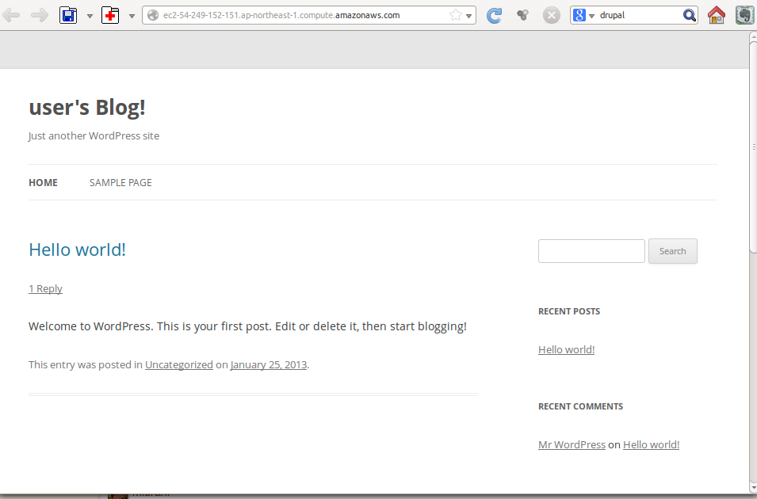
地図表示付きブログをWordpressに実現
続いて、OSMのプラグインを導入して行きましょう。
サイトに User: user Password: bitnami で入ります。
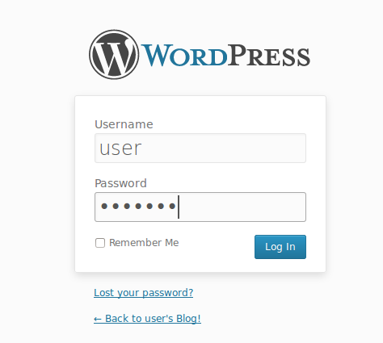
プラグイン
今回使用するプラグインは、こちらです。
http://wordpress.org/extend/plugins/osm/
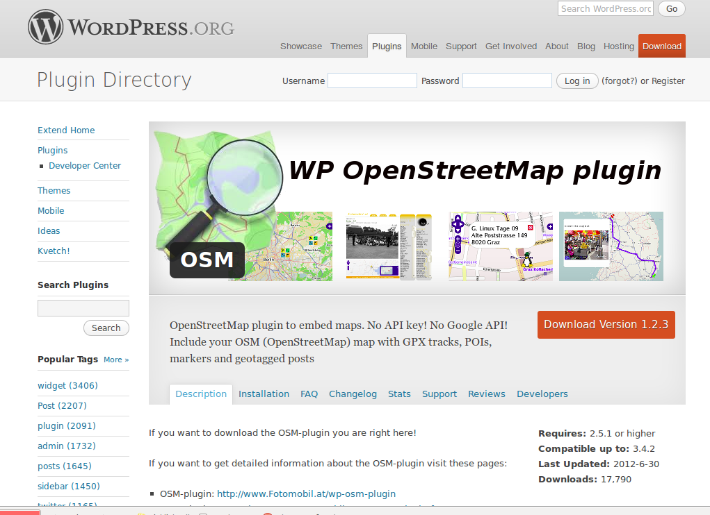
インストール後、設定”OSM”を選択して、設定して行きましょう。
プラグイン追加
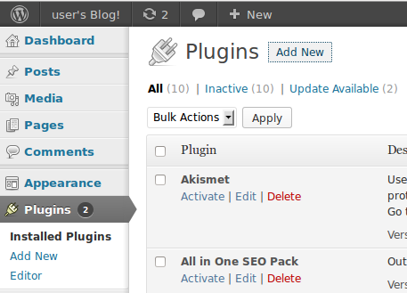
インストールの様子
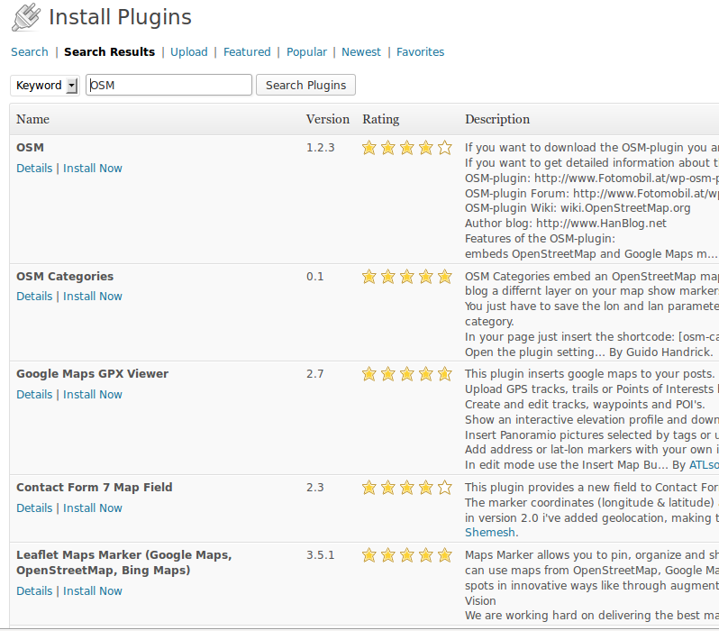
インストール
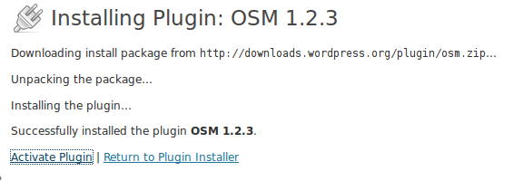
あなたの投稿/ページに、地図を追加する方法
- （必要なら）マーカーを選択する
- （必要なら）GPXファイルや、マーカーファイルを追加する。
- （必要なら）地図の枠線や他のコントロールを追加する
- マップをクリックし、ショートコードを生成する。（マーカーを選んでいれば、クリックした場所に置かれる）
- ショートコードをマップの下からコピーして、投稿へ追加する。
- もし、すべてのOSMマップを有効にしたいならば、argument-typeを削除
- 他の属性を追加する。トラック、ポイントなど。または、地図のサイズを変更する。
- 個人情報をuploadフォルダだけでなく、plugins/osmフォルダーに保存しないこと！
設定：アイコン
アイコンの設定部分です。ブログ記事の地図で、ロケーションを示す ピンの代わりに、アイコンを使えます。
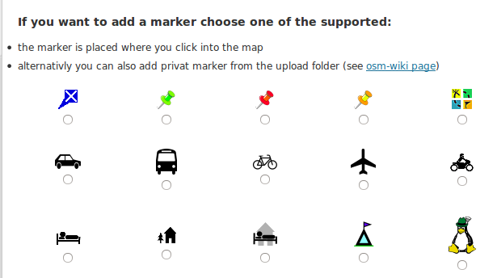
設定：GPX
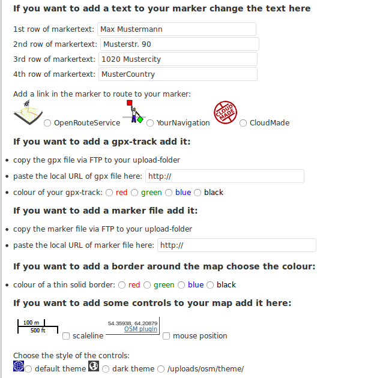
設定:ズームレベル

文字列生成
例えば、次のような文字列が生成される。
[osm_map lat="35.367" long="139.465" zoom="14" width="600" height="450" marker="35.363,139.466" marker_name="wpttemp-green.png" control="scaleline" m_txt_01="ほげほげ" m_txt_02="ふがふが" m_txt_03="" m_txt_04="" theme="ol" type="Mapnik"]
これを、ブログ投稿に貼り付けるだけです。
DONE!

GPX表示
GPSトラッカーや、iPhone/AndroidのGPSとアプリで、自転車での遠出の経路を載せることもできます。

DrupalでOSM利用
アプリ・イメージ検索・インスタンス起動
Drupalには、次のAWSのイメージを使います。 AMI ID: ami-cdfd78cc AMI Name: bitnami-drupal-7.19-0-linux-ubuntu-12.04.1-x86_64-ebs

ログイン
起動してブラウザーで開くとこんなページが開きます。
アクセスMyアプリケーションを選ぶと、ログインできます。 Wordpressと同様、 id: user password: bitnamiでログインしましょう。

Drupalモジュール
今回は、 OpenLayersモジュールを使用します。さらに記事に地図をつけるために、GeoField, GeoPHPモジュールも使用します。
モジュール導入
maoduleの設定を開きます。 新規モジュールインストールを選択し、openlayers モジュールを導入しましょう。

導入URL
INSTALL URL(入手元)には、
http://ftp.drupal.org/files/projects/openlayers-7.x-2.0-beta3.tar.gz
を入れます。 Installボタンをおし導入後、有効化してしまいましょう。 同様に、GeoField, GeoPHPモジュールを導入します。
http://ftp.drupal.org/files/projects/geophp-7.x-1.7.tar.gz
http://ftp.drupal.org/files/projects/geofield-7.x-1.1.tar.gz
サーバにSSHログインして、geoPHPライブラリを追加します。FTPで実施しても構いません。
geoPHPライブラリの追加
bitnami:~$ mkdir /opt/bitnami/apps/drupal/htdocs/sites/all/libraries
bitnami:~$ wget https://github.com/downloads/phayes/geoPHP/geoPHP.tar.gz
2013-02-10 01:16:11 (16.2 MB/s) - `geoPHP.tar.gz' saved
bitnami:~$ cd /opt/bitnami/apps/drupal/htdocs/sites/all/libraries
bitnami:$ tar xf ~/geoPHP.tar.gz
OpenLayersモジュールの有効化

OpenLayers設定
設定の「Structure」-「OpenLayers」を選択します。 MAPSタブを選択します。今回は、example_osmをクローンして利用します。

MAP設定
Editボタンの矢印をクリックすると”Clone”が選択できます。 Mapスタイルの編集画面に入り Layers&Stylesを選択します。
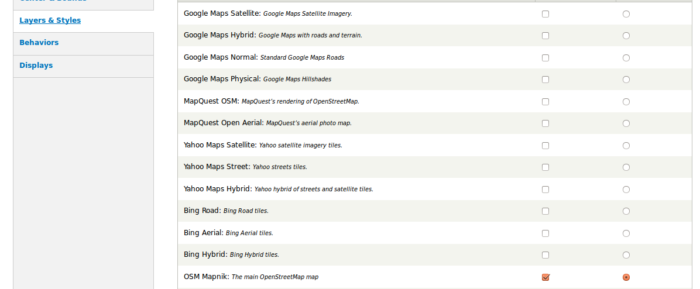
Overlay設定
スクロールダウンすると、オーバーレイの設定があります。Geofieldフォーマッターの欄を有効にします。

デフォルトマップの設定
“Settings”タブで、既定で使用するマップを選びます。

コンテンツタイプを編集
記事にOSMのマップで表示するロケーションをもたせます。
今回の手順は、以下のDrupal OpenLayersモジュールハンドブックに基づきます。
http://drupal.org/node/1481374
(1)Geofield データをノードに追加する
ノードに緯度経度データが保存できるフィールドを追加します。
”Structure”ー”Contents Types”を選択 コンテンツタイプ”Article”に地図を追加します。
GeoField

追加

フィールド追加に ”Geo”, “GeoField”, “OpenStreetMap Map”を選択します。 保存し、次の画面も規定値で、保存してください。 これで、地理的な位置を入力できるようになりました。
”MANAGE DISPLAY”で地図表示の設定

ここでは、先程追加したgeoフィールドの表示について、デフォルトのWKTを”OpenLayers”に変えます。
新規コンテンツ追加
新規コンテンツ追加を選ぶと、編集画面中に、地図を見ることができます。 右上の鉛筆のアイコンを使って、位置を示すことができます。

これで、コンテンツに地図を貼り付けることが出来ました。
Drupalの特長
Drupalでは、処理が複雑でしたが、WordPressに比べ、複雑な処理や様々なサービスを使えるようになっています。ブログだけではなく、地図上に管理するシステムのフレームワークとして利用可能な作りになっています。
範囲
 このようにポイントだけではなく、範囲を示すこともできます。
このようにポイントだけではなく、範囲を示すこともできます。
VIEWSによる一覧表示
DrupalのVIEWSを用いて、一覧表示をしてみましょう。 ここで、Viewsとは何かについては、詳細な説明はしません。 Viewsは、ノードなどのコンテンツ、ユーザなどの任意の要素の、検索条件に合致した要素を集めて、その一覧表示させる画面を作成する機能です。今回は、地図上に一覧を載せる仕掛けとします。
VIEWSモジュールの有効化
Views, Views UI, OpenLayers Viewsモジュールを有効化します。 “Structure” - “Views” から、 “Add Views”として新規Viewを作成します。
実現する構造
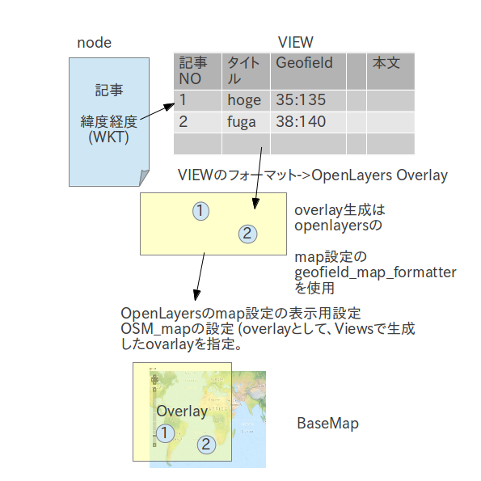
OpenLayers設定（ベースマップ作成）
以下の２つをcloneのもとにしてクローンしてください。
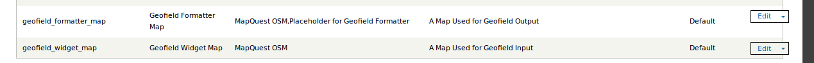
OpenLayers設定（ベースマップ作成）
まず、clone_of_geofield_widget_mapのほうを設定します。入力用に使います。 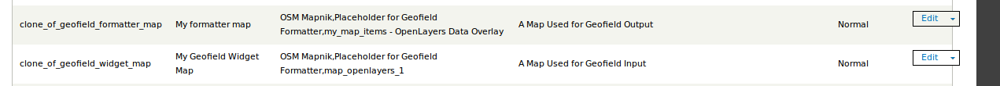
OpenLayers設定（ベースマップ作成）
入力用のオーバーレイを有効にします。 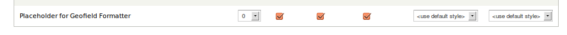
VIEWS設定(Data Overlay)
- 新規Viewを追加してください。
- デフォルトでPageをつくろうとしますが、チェックボックスをオフにしてください。
- Addを押して、Displayを追加します。
- OpenLars Data Overlayを選んでください。
- OpenLayers Data Overlayの設定で、FORMATにOpenLayers Data Overlayを選択します。
- FIELDSにて、"Content: Title" "Content: Geo(geo)" "Contents: Body(body)"を追加します。
- これは、地図上のポップアップで、表示されるために必要です。
- また、位置情報を地図配置に使用します。
設定画面の例
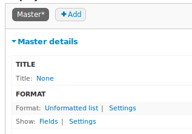
設定画面の例
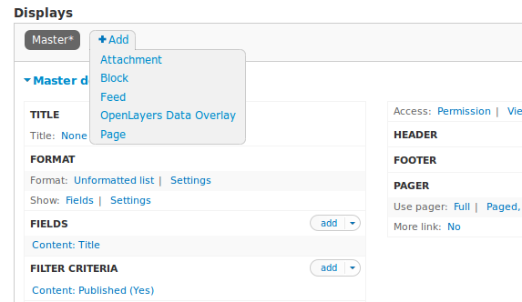
設定画面の例
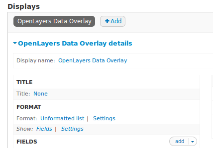
VIEWS設定(Display page)
- 新規Displayを追加します(Add-Page)
- FORMATに"OpenLayers Map"を選択します
- Pathを設定します（インデックスページのパス） ex. /mapindex
OpenLayers設定（オーバーレイ追加）
これでベースマップと、ノードから作成したDataオーバーレイの生成ができたので、つぎにオーバーレイを ベースマップの上で有効にします。
Openlayers設定(出力用オーバーレイ追加)
Geofield formatter MAP のクローンしたもの(output)を編集します。
Openlayers設定(出力用オーバーレイ追加)
出力用に、先程Viewsで作成したオーバーレイを表示有効にします。 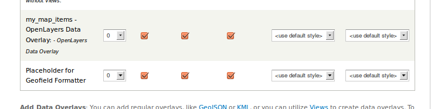
Openlayers設定(出力用オーバーレイ追加)
- ノード情報の重ね合わせを有効にするために、Behaviorの設定を替えます。
- " Cluster Features "にチェックを入れ、" my_map_items_openlayers_1 "を選択します。
- ポップアップ設定" Pop Up for Features "を有効にし、" my_map_items_openlayers_1 "を選択します。
完成
これで地図上のインデックスが完成しました。
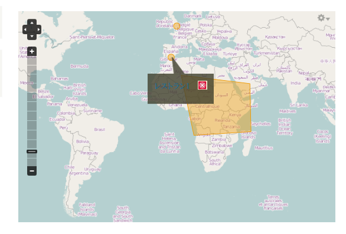
THANK YOU
Http://osm.jp/